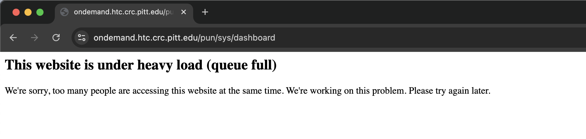

Frequently asked questions (FAQ)¶
In this section we list a series of common problems that CRCD users may encounter, with possible solutions.
1. Encountering an Ominous Warning Message
WARNING: REMOTE HOST IDENTIFICATION HAS CHANGED!
After a scheduled quarterly maintenance, ssh attempts from your laptop to h2p.crc.pitt.edu, htc.crc.pitt.edu,
or another CRCD remote server can fail with the following warning message below.
Last login: Fri Aug 22 08:48:12 on ttys009
kimwong@M1-Max ~ % ssh login3.crc.pitt.edu
@@@@@@@@@@@@@@@@@@@@@@@@@@@@@@@@@@@@@@@@@@@@@@@@@@@@@@@@@@@
@ WARNING: REMOTE HOST IDENTIFICATION HAS CHANGED! @
@@@@@@@@@@@@@@@@@@@@@@@@@@@@@@@@@@@@@@@@@@@@@@@@@@@@@@@@@@@
IT IS POSSIBLE THAT SOMEONE IS DOING SOMETHING NASTY!
Someone could be eavesdropping on you right now (man-in-the-middle attack)!
It is also possible that a host key has just been changed.
The fingerprint for the ED25519 key sent by the remote host is
SHA256:J0awPWHGaPS37Cc5OZpR/ITGrHmmRIJYj6WfKbD1N9g.
Please contact your system administrator.
Add correct host key in /Users/kimwong/.ssh/known_hosts to get rid of this message.
Offending ED25519 key in /Users/kimwong/.ssh/known_hosts:30
Host key for login3.crc.pitt.edu has changed and you have requested strict checking.
Host key verification failed.
kimwong@M1-Max ~ %
This warning message indicates that changes to the remote server (e.g., an IP address change) have invalidated the
remote server host key, which is stored in a file called .ssh/known_hosts. The message also suggests a possible fix
(highlighted in yellow).
Last login: Fri Aug 22 08:48:12 on ttys009
kimwong@M1-Max ~ % ssh login3.crc.pitt.edu
@@@@@@@@@@@@@@@@@@@@@@@@@@@@@@@@@@@@@@@@@@@@@@@@@@@@@@@@@@@
@ WARNING: REMOTE HOST IDENTIFICATION HAS CHANGED! @
@@@@@@@@@@@@@@@@@@@@@@@@@@@@@@@@@@@@@@@@@@@@@@@@@@@@@@@@@@@
IT IS POSSIBLE THAT SOMEONE IS DOING SOMETHING NASTY!
Someone could be eavesdropping on you right now (man-in-the-middle attack)!
It is also possible that a host key has just been changed.
The fingerprint for the ED25519 key sent by the remote host is
SHA256:J0awPWHGaPS37Cc5OZpR/ITGrHmmRIJYj6WfKbD1N9g.
Please contact your system administrator.
Add correct host key in /Users/kimwong/.ssh/known_hosts to get rid of this message.
Offending ED25519 key in /Users/kimwong/.ssh/known_hosts:30
Host key for login3.crc.pitt.edu has changed and you have requested strict checking.
Host key verification failed.
kimwong@M1-Max ~ %
One fix is to edit the file /Users/kimwong/.ssh/known_hosts and delete line 30 which has the offending "ED25519 key".
The :30 syntax in the second highlighted sentence above indicates line 30 of the file known_hosts.
An alternative fix is to issue the command
ssh-keygen -R <hostname>
<hostname> is the hostname of the computer you are trying to connect to. This will remove all keys belonging
to the specified <hostname> and update the known_hosts file automatically. The above warning message also shows
the <hostname> (highlighted in green and underlined) that failed the host key verification.
When you first log into a remote server, you are warned that the authenticity of a host cannot be verified and if you wish to continue connecting.
kimwong@M1-Max ~ % ssh login3.crc.pitt.edu
The authenticity of host 'login3.crc.pitt.edu (136.142.28.148)' can't be established.
ED25519 key fingerprint is SHA256:J0awPWHGaPS37Cc5OZpR/ITGrHmmRIJYj6WfKbD1N9g.
This host key is known by the following other names/addresses:
~/.ssh/known_hosts:27: login2.crc.pitt.edu
~/.ssh/known_hosts:31: h2p.crc.pitt.edu
~/.ssh/known_hosts:32: login1.crc.pitt.edu
Are you sure you want to continue connecting (yes/no/[fingerprint])?
If you answer yes, you will see the following message:
Are you sure you want to continue connecting (yes/no/[fingerprint])? yes
Warning: Permanently added 'login3.crc.pitt.edu' (ED25519) to the list of known hosts.
Connection closed by 136.142.28.148 port 22
.ssh/known_hosts file. Now the next time you ssh to the
remote server, the key on the remote server is compared against the one stored in .ssh/known_hosts. If the
keys match, you continue connecting to the server. If the keys don't match, you see the ominous warning message.
This situation happens, for example, when we need to replace an old server with a new more performant one and we
keep the same hostname. The new host key will not match with the one stored in your .ssh/known_hosts file.
2. I'm graduating soon. Can I continue to use CRCD to complete my papers?
Yes. Please see the section on Sponsored Accounts.
3. Can I provide my collaborators, who are outside of Pitt, access to my CRCD allocation?
Yes. Please see the section on Sponsored Accounts.
4. I'm an Emeritus Faculty, can I still use CRCD?
Yes. In the eyes of CRCD, a Pitt Emeritus Faculty gets the same benefits as an active faculty.
5. Open OnDemand: Website under heavy load error
The website is under heavy load (queue full)

From a Chrome browser, start a New Incognito Window and paste the following URL and authenticate.
https://ondemand.htc.crc.pitt.edu/nginx/stop?redir=/pun/sys/dashboard/
You can read about it from the Open OnDemand Discourse forum.
6. Red Hat Insights prompt upon login
Red Hat Insights
Upon successful login, I see the following prompt. Do I need to do anything?
kimwong@M1-Max ~ % ssh h2p.crc.pitt.edu
Register this system with Red Hat Insights: rhc connect
Example:
# rhc connect --activation-key <key> --organization <org>
The rhc client and Red Hat Insights will enable analytics and additional
management capabilities on your system.
View your connected systems at https://console.redhat.com/insights
You can learn more about how to register your system
using rhc at https://red.ht/registration
Last login: Mon Aug 25 15:58:56 2025 from 10.25.193.128
[kimwong@login1.crc.pitt.edu ~]$
Ignore. This message is intended for Systems Administrators. We will leave this FAQ up until we find time to disable the message.
It's advertisement for AI. You can read the promo if you are interested.
7. I loaded python but where's conda?
Missing conda
[kimwong@login1.crc.pitt.edu ~]$module spider python
------------------------------------------------------
python:
------------------------------------------------------
Versions:
python/ondemand-jupyter-python3.9
python/ondemand-jupyter-python3.11
...
python/3.12.0-ig3l6e
python/3.12.8-ydargp
Other possible modules matches:
openslide-python py-biopython
------------------------------------------------------
To find other possible module matches execute:
$ module -r spider '.*python.*'
------------------------------------------------------
For detailed information about a specific "python" package (including how to load the modules) use the module's full name.
Note that names that have a trailing (E) are extensions provided by other modules.
For example:
$ module spider python/3.12.8-ydargp
------------------------------------------------------
[kimwong@login1.crc.pitt.edu ~]$module load python/3.12.8-ydargp
[kimwong@login1.crc.pitt.edu ~]$which python
/software/rhel9/spack/install/linux-rhel9-x86_64/gcc-11.4.1/python-3.12.8-ydargpm3mtvvle4gg4stjl66phnu3nth/bin/python
[kimwong@login1.crc.pitt.edu ~]$which conda
/usr/bin/which: no conda in (/software/rhel9/spack/install/linux-rhel9-x86_64/gcc-11.4.1/python-3.12.8-ydargpm3mtvvle4gg4stjl66phnu3nth/bin:.:
/xhome/crc/kimwong/bin:/usr/local/bin:/usr/bin:/usr/local/sbin:/usr/sbin:/ihome/crc/pipx/bin)
[kimwong@login1.crc.pitt.edu ~]$
In the new rhel9 Spack environment, the Anaconda distribution of Python is a separate module. You can
load it as follows, which will also provide you conda:
[kimwong@login1.crc.pitt.edu ~]$module spider anaconda
--------------------------------------------------------
anaconda3:
--------------------------------------------------------
Versions:
anaconda3/2021.11-python_3.9.7-fqibig
anaconda3/2022.10-python_3.9.13-x3avg2
anaconda3/2023.09-0-python_3.11.5-amgrwv
--------------------------------------------------------
For detailed information about a specific "anaconda3" package (including how to load the modules) use the module's full name.
Note that names that have a trailing (E) are extensions provided by other modules.
For example:
$ module spider anaconda3/2023.09-0-python_3.11.5-amgrwv
--------------------------------------------------------
[kimwong@login1.crc.pitt.edu ~]$module load anaconda3/2022.10-python_3.9.13-x3avg2
[kimwong@login1.crc.pitt.edu ~]$which python
/software/rhel9/spack/install/linux-rhel9-x86_64/gcc-11.4.1/anaconda3-2022.10-x3avg2z6spaqdupsmq3cdzsfjzzzdimp/bin/python
[kimwong@login1.crc.pitt.edu ~]$which conda
/software/rhel9/spack/install/linux-rhel9-x86_64/gcc-11.4.1/anaconda3-2022.10-x3avg2z6spaqdupsmq3cdzsfjzzzdimp/condabin/conda
[kimwong@login1.crc.pitt.edu ~]$which pip3
/software/rhel9/spack/install/linux-rhel9-x86_64/gcc-11.4.1/anaconda3-2022.10-x3avg2z6spaqdupsmq3cdzsfjzzzdimp/bin/pip3
[kimwong@login1.crc.pitt.edu ~]$which pip
/software/rhel9/spack/install/linux-rhel9-x86_64/gcc-11.4.1/anaconda3-2022.10-x3avg2z6spaqdupsmq3cdzsfjzzzdimp/bin/pip
[kimwong@login1.crc.pitt.edu ~]$
In the old rhel7 environment, the environment modules were created by hand. We decided at the time to organized the Anaconda distribution under the python category.
[kimwong@viz-n0.crc.pitt.edu ~]$module spider python
------------------------------------------------
python:
------------------------------------------------
Description:
Anaconda is the leading open data science platform powered by Python.
Versions:
python/anaconda2.7-5.2.0
python/anaconda3.5-4.2.0
...
python/anaconda3.9-2021.11
python/bioconda-2.7-5.2.0
...
python/bioconda-3.7-2019.03
python/intel-3.5
python/intel-3.6
python/ondemand-jupyter-python3.8
python/ondemand-jupyter-python3.10
python/ondemand-jupyter-python3.11
python/3.7.0-fastx
python/3.7.0
Other possible modules matches:
biopython openslide-python
------------------------------------------------
To find other possible module matches do:
module -r spider '.*python.*'
------------------------------------------------
For detailed information about a specific "python" module (including how to load the modules) use the module's full name.
For example:
$ module spider python/ondemand-jupyter-python3.9
------------------------------------------------
[kimwong@viz-n0.crc.pitt.edu ~]$module spider anaconda
Lmod has detected the following error: Unable to find: "anaconda"
[kimwong@viz-n0.crc.pitt.edu ~]$
In the new rhel9 environment, the modules are generated automatically in Spack. Within the Spack recipe, Anaconda is a separate module.
8. How do I avoid typing my Pitt password every time I log in?
Set up passwordless SSH with a key pair. Generate a key on your own computer, copy the public half to the login node once (the last time you'll enter your Pitt password), then connect as usual:
ssh-keygen -t ed25519
ssh-copy-id <pittID>@h2p.crc.pitt.edu
ssh <pittID>@h2p.crc.pitt.edu
You still need the VPN connected. For the full walkthrough — Windows steps, using an SSH agent and a config shortcut, and setting up passwordless hops between cluster nodes for MPI — see Passwordless SSH.